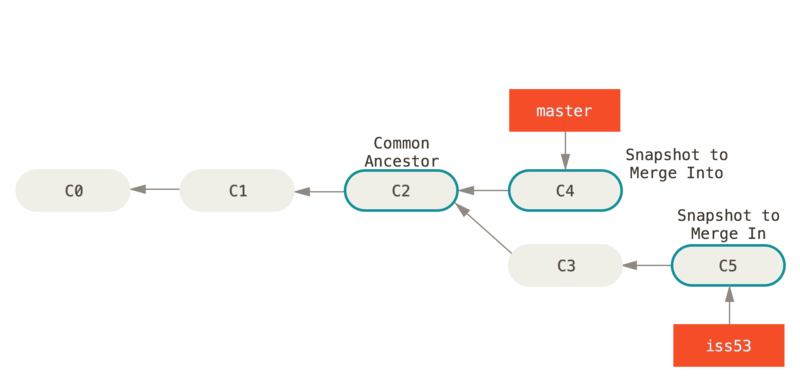

ВЕТВИ GITLAB
3.2 Ветвление в Git - Основы ветвления и слияния
Давайте рассмотрим простой пример рабочего процесса, который может быть полезен в вашем проекте. Ваша работа построена так:
В этот момент вы получаете сообщение, что обнаружена критическая ошибка, требующая скорейшего исправления. Ваши действия:
Предположим, вы работаете над проектом и уже имеете несколько коммитов.
Рисунок 18. Простая история коммитов
Вы решаете, что теперь вы будете заниматься проблемой #53 из вашей системы отслеживания ошибок. Чтобы создать ветку и сразу переключиться на нее, можно выполнить команду git checkout с параметром -b:
$ git checkout -b iss53
Switched to a new branch "iss53"
Это тоже самое что и:
$ git branch iss53
$ git checkout iss53
Рисунок 19. Создание нового указателя ветки
Вы работаете над своим сайтом и делаете коммиты. Это приводит к тому, что ветка iss53 движется вперед, так как вы переключились на нее ранее (HEAD указывает на нее).
$ vim index.html
$ git commit -a -m 'added a new footer [issue 53]'
Рисунок 20. Ветка iss53 двигается вперед
Тут вы получаете сообщение об обнаружении уязвимости на вашем сайте, которую нужно немедленно устранить. Благодаря Git, не требуется размещать это исправление вместе с тем, что вы сделали в iss53. Вам даже не придется прилагать усилий, чтобы откатить все эти изменения для начала работы над исправлением. Все, что вам нужно — переключиться на ветку master.
Но перед тем как сделать это — имейте в виду, что если ваш рабочий каталог либо область подготовленных файлов содержат изменения, не попавшие в коммит и конфликтующие с веткой, на которую вы хотите переключиться, то Git не позволит вам переключить ветки. Лучше всего переключаться из чистого рабочего состояния проекта. Есть способы обойти это (спрятать (stash) или исправить (amend) коммиты), но об этом мы поговорим позже в главе Прибережение и очистка. Теперь предположим, что вы зафиксировали все свои изменения и можете переключиться на основную ветку:
$ git checkout master
Switched to branch 'master'
С этого момента ваш рабочий каталог имеет точно такой же вид, какой был перед началом работы над проблемой #53. Теперь вы можете сосредоточиться на работе над исправлением. Важно запомнить: когда вы переключаете ветки, Git возвращает состояние рабочего каталога к тому виду, какой он имел в момент последнего коммита в эту ветку. Он добавляет, удаляет и изменяет файлы автоматически, чтобы состояние рабочего каталога соответствовало тому, когда был сделан последний коммит.
Теперь вы можете перейти к написанию исправления. Давайте создадим новую ветку для исправления, в которой будем работать, пока не закончим исправление.
$ git checkout -b hotfix
Switched to a new branch 'hotfix'
$ vim index.html
$ git commit -a -m 'fixed the broken email address'
[hotfix 1fb7853] fixed the broken email address
1 file changed, 2 insertions(+)
Рисунок 21. Ветка hotfix основана на ветке master
Вы можете прогнать тесты, чтобы убедиться, что ваше исправление делает именно то, что нужно. И если это так — выполнить слияние (merge) с основной веткой для включения в продукт. Это делается командой git merge:
$ git checkout master
$ git merge hotfix
Updating f42c576..3a0874c
Fast-forward
index.html | 2 ++
1 file changed, 2 insertions(+)
Заметили фразу “fast-forward” в этом слиянии? Из-за того, что коммит, на который указывала ветка, которую вы слили, был прямым потомком того коммита, на котором вы находились, Git просто переместил указатель ветки вперед. Другими словами, если коммит сливается с тем, до которого можно добраться, двигаясь по истории прямо, Git упрощает слияние, просто перенося указатель метки вперед (так как нет разветвления в работе). Это называется ``fast-forward`` (перемотка). Теперь ваши изменения — в снимке (snapshot) коммита, на который указывает ветка master, и исправления продукта можно внедрять.
Рисунок 22. master перемотан до hotfix
После внедрения вашего архиважного исправления вы готовы вернуться к работе над тем, что были вынуждены отложить. Но сначала нужно удалить ветку hotfix, потому что она больше не нужна — ветка master указывает на то же самое место. Для удаления ветки выполните команду git branch с параметром -d:
$ git branch -d hotfix
Deleted branch hotfix (3a0874c).
Теперь вы можете переключить ветку и вернуться к работе над своей проблемой #53:
$ git checkout iss53
Switched to branch "iss53"
$ vim index.html
$ git commit -a -m 'finished the new footer [issue 53]'
[iss53 ad82d7a] finished the new footer [issue 53]
1 file changed, 1 insertion(+)
Рисунок 23. Продолжение работы над iss53
Стоит обратить внимание на то, что все изменения из ветки hotfix не включены в вашу ветку iss53. Если их нужно включить, вы можете влить ветку master в вашу ветку iss53 командой git merge master, или же вы можете отложить слияние этих изменений до завершения работы, и затем влить ветку iss53 в master.
Предположим, вы решили, что работа по проблеме #53 закончена, и ее можно влить в ветку master. Для этого нужно выполнить слияние ветки iss53 точно так же, как вы делали это с веткой hotfix ранее. Все что нужно сделать — переключиться на ветку, в которую вы хотите включить изменения, и выполнить команду git merge:
$ git checkout master
Switched to branch 'master'
$ git merge iss53
Merge made by the 'recursive' strategy.
index.html | 1 +
1 file changed, 1 insertion(+)
Результат этой операции отличается от результата слияния ветки hotfix. В данном случае процесс разработки ответвился в более ранней точке. Так как коммит, на котором мы находимся, не является прямым потомком ветки, с которой мы выполняем слияние, Git придется немного потрудиться. В этом случае Git выполняет простое трехстороннее слияние двух снимков (snapshot) сливаемых веток и общего для двух веток родительского снимка.

Рисунок 24. Использование трех снимков при слиянии
Вместо того, чтобы просто передвинуть указатель ветки вперед, Git создает новый снимок-результат трехстороннего слияния, а затем автоматически делает коммит. Этот особый коммит называют коммитом слияния, так как у него более одного предка.
Рисунок 25. Коммит слияния
Стоит отметить, что Git сам определяет наилучшего общего предка, подходящего как база для слияния; это отличает его от более старых инструментов, таких как CVS или Subversion (до версии 1.5), где разработчикам, выполнявшим слияние, приходилось самим находить лучшую базу. Это безумно упрощает слияние в Git по сравнению с указанными системами.
Теперь, когда работа влита, ветка iss53 больше не нужна. Вы можете закрыть вопрос в системе отслеживания ошибок и удалить ветку:
$ git branch -d iss53
Иногда процесс не проходит гладко. Если вы изменили одну и ту же часть одного и того же файла по-разному в двух объединяемых ветках, Git не сможет их чисто объединить. Если ваше исправление ошибки #53 потребовало изменить ту же часть файла, что и hotfix, вы получите примерно такое сообщение о конфликте слияния:
$ git merge iss53
Auto-merging index.html
CONFLICT (content): Merge conflict in index.html
Automatic merge failed; fix conflicts and then commit the result.
Git не создал коммит слияния автоматически. Он остановил процесс до тех пор, пока вы не разрешите конфликт. Чтобы в любой момент после появления конфликта увидеть, какие файлы не объединены, вы можете запустить git status:
$ git status
On branch master
You have unmerged paths.
(fix conflicts and run "git commit")
Unmerged paths:
(use "git add <file>..." to mark resolution)
both modified: index.html
no changes added to commit (use "git add" and/or "git commit -a")
Все, где есть неразрешенные конфликты слияния, перечисляется как неслитое. Git добавляет в конфликтующие файлы стандартные пометки разрешения конфликтов, чтобы вы могли вручную открыть их и разрешить конфликты. В вашем файле появился раздел, выглядящий примерно так:
<<<<<<< HEAD:index.html
<div id="footer">contact : email.support@github.com</div>
=======
<div id="footer">
please contact us at support@github.com
</div>
>>>>>>> iss53:index.html
Это означает, что версия из HEAD (вашей ветки master, поскольку именно ее вы выгрузили, запустив команду слияния) — это верхняя часть блока (все, что над =======), а версия из вашей ветки iss53 представлена в нижней части. Чтобы разрешить конфликт, придется выбрать одну из сторон, либо объединить содержимое по-своему. Например, вы можете разрешить конфликт, заменив весь блок этим:
<div id="footer">
please contact us at email.support@github.com
</div>
В этом разрешении есть немного от каждой части, а строки <<<<<<<, ======= и >>>>>>> совсем убраны. Разрешив каждый конфликт во всех файлах, запустите git add для каждого файла, чтобы отметить конфликт как решенный. Подготовка (staging) файла помечает его для Git как разрешенный конфликт.
Если вы хотите использовать графический инструмент для разрешения конфликтов, можно запустить git mergetool, что откроет соответствующее визуальное средство, которое проведет вас по всем конфликтам:
$ git mergetool
This message is displayed because 'merge.tool' is not configured.
See 'git mergetool --tool-help' or 'git help config' for more details.
'git mergetool' will now attempt to use one of the following tools:
opendiff kdiff3 tkdiff xxdiff meld tortoisemerge gvimdiff diffuse diffmerge ecmerge p4merge araxis bc3 codecompare vimdiff emerge
Merging:
index.html
Normal merge conflict for 'index.html':
{local}: modified file
{remote}: modified file
Hit return to start merge resolution tool (opendiff):
Если вы хотите использовать средство слияния не по умолчанию (в данном случае Git выбрал opendiff, поскольку команда запускалась на Mac), список всех поддерживаемых инструментов представлен вверху после фразы “one of the following tools.” Просто введите название инструмента, который нужно использовать.
|
Note |
Описание расширенных средств разрешения сложных конфликтов слияния мы приводим в разделе Продвинутое слияние. |
После выхода из средства слияния Git спрашивает, успешно ли слияние. Если вы утвердительно ответите скрипту, он подготовит (stage) файл, чтобы отметить его как разрешенный. Теперь можно снова запустить git status, чтобы убедиться, что все конфликты разрешены:
$ git status
On branch master
All conflicts fixed but you are still merging.
(use "git commit" to conclude merge)
Changes to be committed:
modified: index.html
Если это вас устраивает, и вы убедились, что все, где были конфликты, подготовлено (staged), можете ввести git commit, чтобы завершить коммит слияния. Комментарий к коммиту по умолчанию выглядит примерно так:
Merge branch 'iss53'
Conflicts:
index.html
#
# It looks like you may be committing a merge.
# If this is not correct, please remove the file
# .git/MERGE_HEAD
# and try again.
# Please enter the commit message for your changes. Lines starting
# with '#' will be ignored, and an empty message aborts the commit.
# On branch master
# All conflicts fixed but you are still merging.
#
# Changes to be committed:
# modified: index.html
#
Вы можете дополнить это сообщение подробностями того, как были разрешены конфликты, если считаете, что это поможет другим в будущем разобраться в данном слиянии, если это не очевидно: что вы сделали и почему.
===================
Переключение на ветку Master
Просто используйте команду git checkout для переключения между ветками.
Выполните:
git checkout master
cat lib/hello.html
Результат:
$ git checkout master
Switched to branch 'master'
$ cat lib/hello.html
<!-- Author: Alexander Shvets (alex@githowto.com) -->
<html>
<head>
</head>
<body>
<h1>Hello, World!</h1>
</body>
</html>